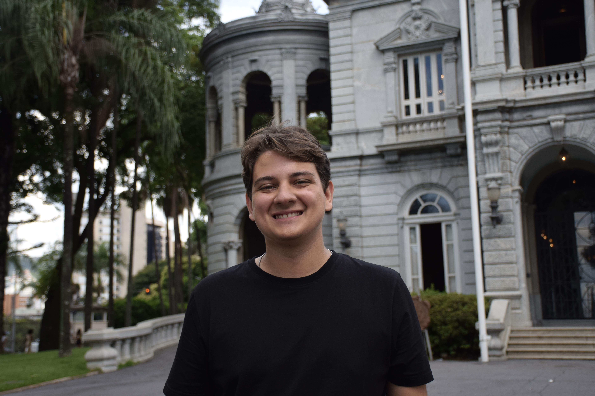
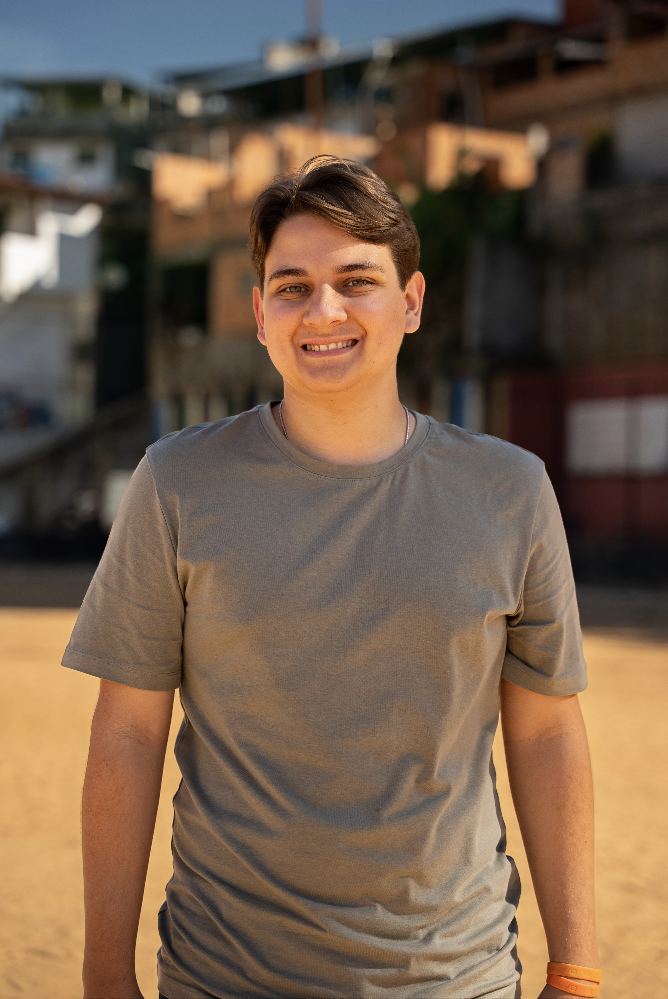
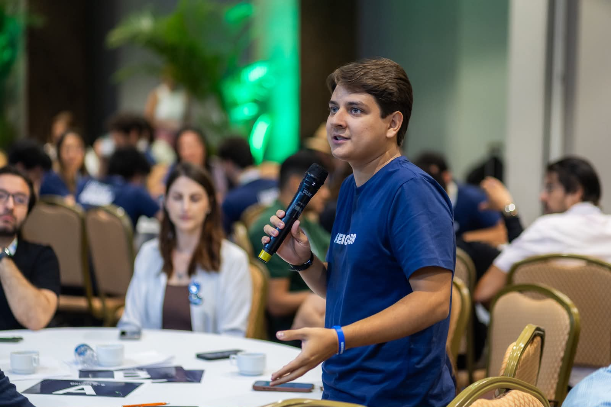
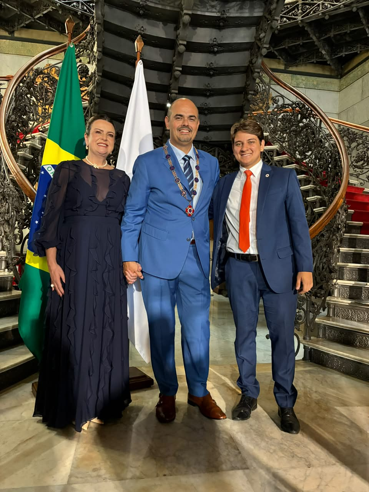
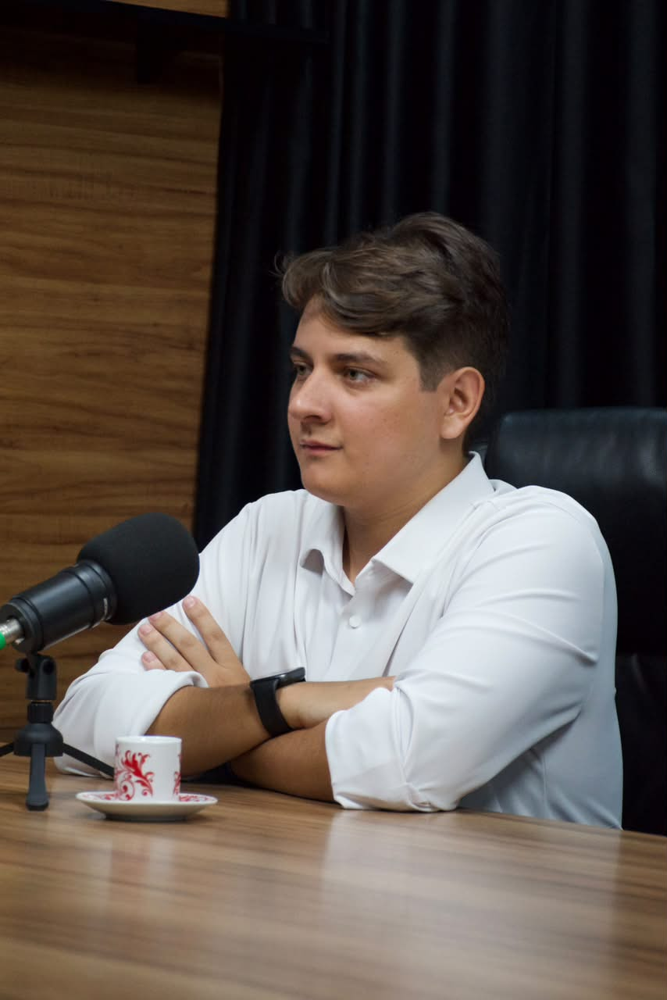
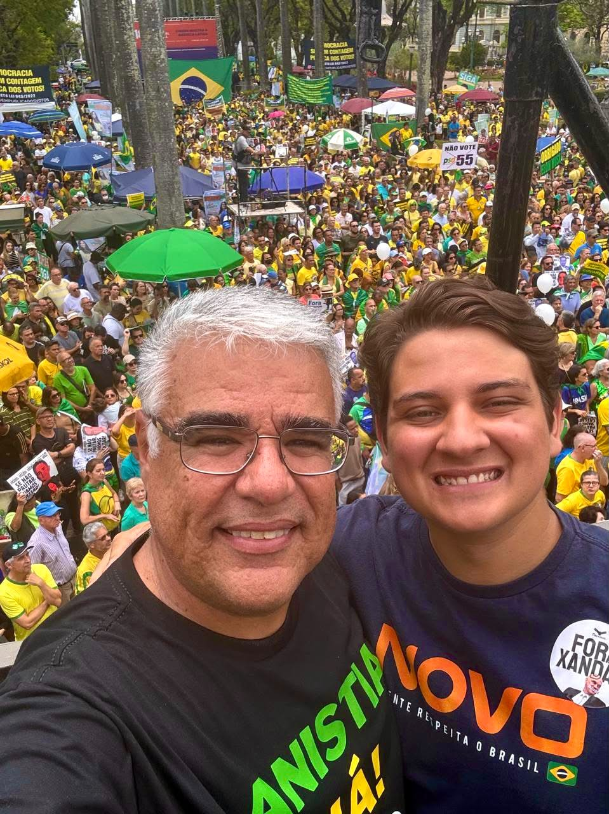
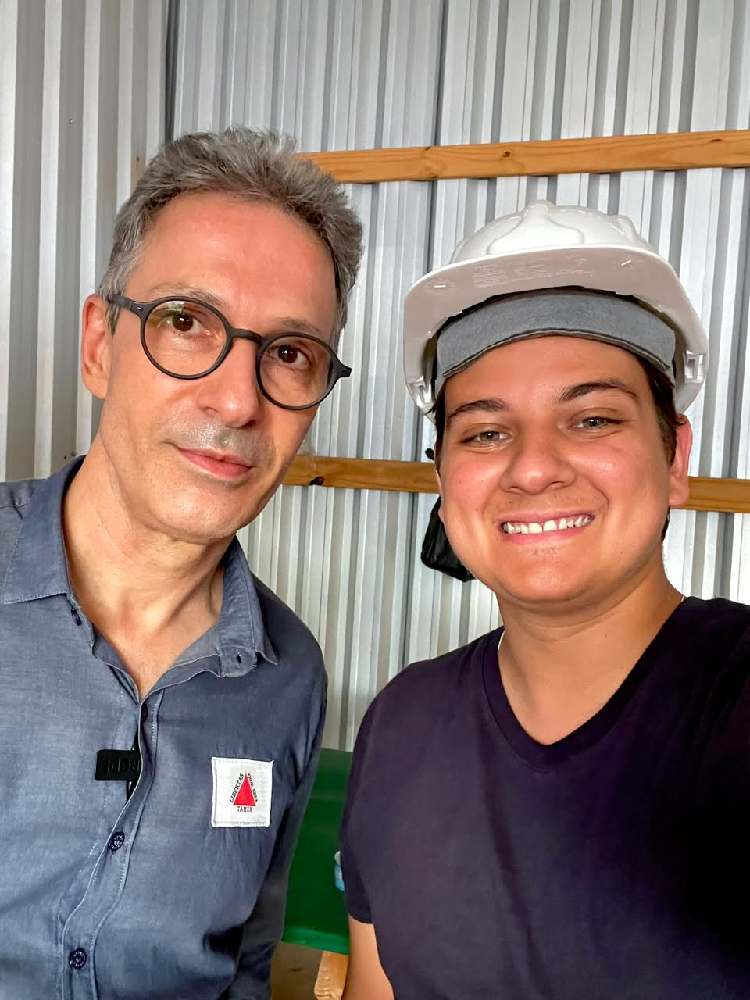
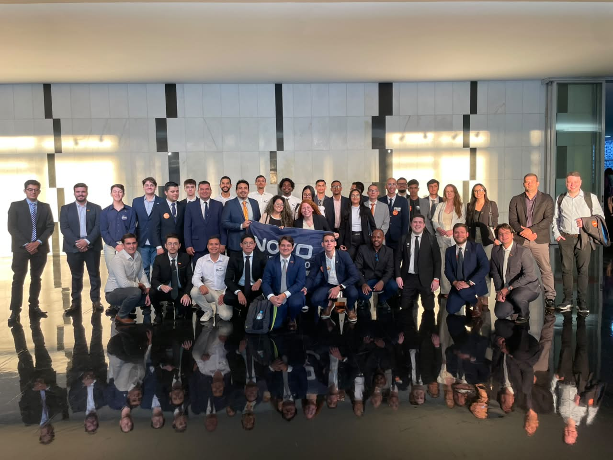
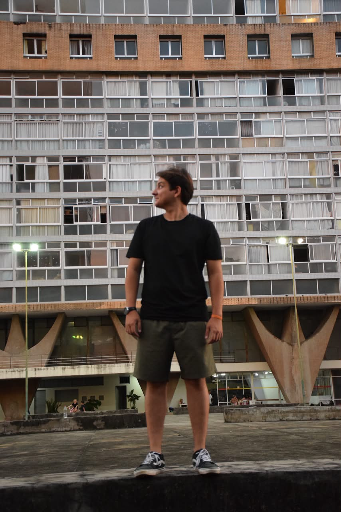
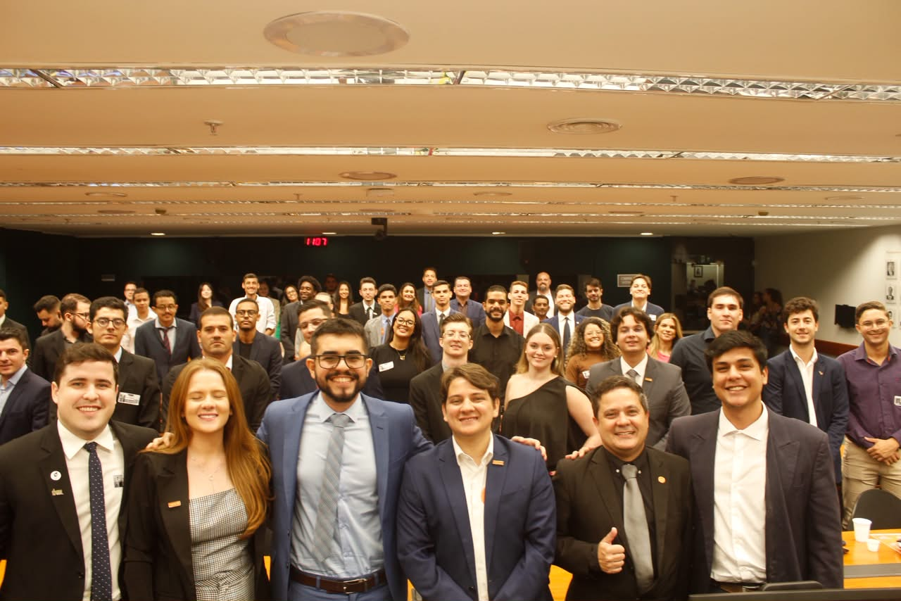

JOVEM A SERVIÇO DE MINAS.
Matheus Biancardine Pré Candidato a Deputado
Por uma Minas Gerais com mais liberdade, segurança e oportunidades para todos.


Quem é Matheus Biancardine?
Matheus Biancardine encontrou em Minas Gerais sua casa e seu propósito. Mudou-se para o estado com a família em busca de segurança e oportunidades, e desde então construiu uma relação de amor incondicional com Minas, sua gente, sua história, seus valores e sua juventude.
Católico, estudante de Direito e de Ciências Políticas, iniciou sua trajetória pública na juventude, fundando a Juventude do Partido NOVO e atuando como presidente estadual e nacional do movimento. Também presidiu o Conselho Estadual da Juventude de Minas Gerais, foi conselheiro estadual, delegado nacional de juventude e Diretor Estadual de Políticas para as Juventudes no Governo de Minas, pela Sedese.
Atualmente, atua como assessor do Governo de Minas, levando sua experiência na gestão pública, na articulação política e na defesa da juventude para uma missão maior: representar uma nova geração na política.
Em 2026, seu objetivo é chegar à Câmara dos Deputados como uma voz jovem, liberal e corajosa a serviço de Minas Gerais, defendendo liberdade, segurança, menos impostos, oportunidades para a juventude e uma política feita com propósito, responsabilidade e coragem.
Nossas Propostas
Foco no que Minas precisa para crescer.
Primeiro Emprego
Atualizar a Lei da Aprendizagem, reduzindo a burocracia para as empresas e criando o "Jovem Aprendiz 2.0" para conectar educação técnica e mercado de trabalho.
Jovem do Campo, Futuro de Minas
Apoio ao crédito, internet rural e sucessão familiar para os jovens produtores agrícolas mineiros, garantindo o futuro do nosso agronegócio.
Segurança para as Famílias
Leis mais rígidas contra o crime, proteção da família e combate ao recrutamento de jovens por facções criminosas.
Mandato Econômico e Transparente
Redução drástica de gastos de gabinete e prestação de contas contínua de todas as emendas e ações parlamentares.
Brasil Sem Corrupção
Fortalecimento das leis de transparência, compliance em contratos públicos e punição efetiva para desvios de dinheiro público.
Menos Imposto, Mais Oportunidade
Lutar pela simplificação tributária e desoneração para quem quer empreender e gerar empregos em Minas Gerais.
Renovação Política de Verdade
Mandato aberto, formação de novas lideranças e redução de privilégios políticos no Congresso Nacional.
Galeria de Fotos








Fale Conosco
Sua voz é fundamental para construirmos uma Minas melhor. Entre em contato e acompanhe nossas redes sociais.
 WhatsApp: (31) 98362-6852
WhatsApp: (31) 98362-6852
 Instagram: @matheus.biancardine
Instagram: @matheus.biancardine